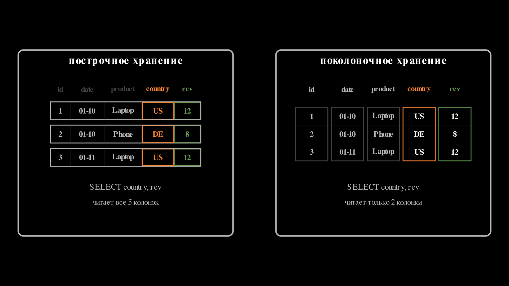
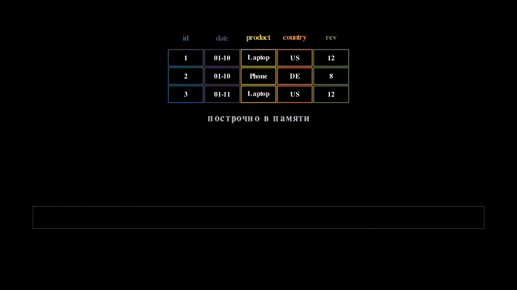
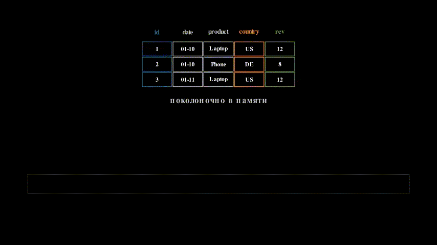

Физическое хранение таблиц: heap, clustered и колоночное
Физическое хранение таблиц: heap, clustered и колоночное
LSM и B-дерево показали, как на диске живёт одна пара ключ → значение: первое оптимизировано под запись, второе — под предсказуемое чтение. Но реальная таблица — это не одна пара. Это миллионы строк по многу колонок, и возникают два новых вопроса:
- где физически лежат сами строки таблицы;
- как индекс добирается от ключа до полной строки со всеми полями.
Ответ определяет цену INSERT, цену точечного чтения, цену агрегирующего скана — и в конце концов разделение баз на транзакционные и аналитические.
Heap: строки лежат кучей
Самый простой способ — завести файл под таблицу и складывать строки туда в том порядке, в котором они пришли. Этот файл называют heap — не в смысле кучи-структуры данных, а буквально «свалка, куда нет очереди». Так работает PostgreSQL по умолчанию, так же исторически устроен Oracle.
Файл разбит на страницы по 8 KB. Внутри страницы:
┌────────────────────────────────┐
│ page header │
│ slot[0] → offset A │ ← каталог слотов
│ slot[1] → offset B │
│ ... │
│ (свободное место) │
│ ... │
│ [tuple B: row bytes] │ ← сами строки
│ [tuple A: row bytes] │
└────────────────────────────────┘У каждой строки есть физический адрес ctid = (page_id, slot) — «эта строка на диске прямо сейчас».
Теперь индексы. Первичный ключ в heap-таблице — это обычный B-tree, не более особенный, чем индекс по email: в листьях он хранит пары (ключ, ctid). Любой поиск по индексу — два шага:
- спуск по B-tree → получили
ctid; - одно обращение к нужной странице heap → получили строку.
Heap платит этим лишним прыжком за то, что INSERT почти бесплатный: база берёт любую страницу со свободным местом и кладёт туда строку. Никакой перестройки дерева на запись, никаких расщеплений листьев в таблице.
Index-organized table: таблица и есть индекс
Альтернативный ход: раз по первичному ключу всё равно нужен B-tree, пусть сама таблица им и будет. В листьях дерева лежат не ctid, а целые строки. Так устроены MySQL InnoDB, SQLite, Oracle IOT. Такой подход называют index-organized table или clustered index — таблица физически упорядочена по PK.
На чтении это выигрыш: поиск по PK — один спуск до листа, и сразу получаем строку. Лишнего прыжка в отдельный файл нет.
На записи — цена. INSERT должен найти правильное место в отсортированном дереве и, если лист переполнен, расщепить его. Поэтому в БД, которые используют такую схему, болезненно вставлять со случайным PK (например, UUIDv4) и комфортно — с монотонно растущим: монотонные вставки всегда попадают в последний лист. Отсюда правило «делай PK монотонным».
Скрытая вторая цена — вторичные индексы. Они не могут хранить физический адрес строки: расщепление переставляет строки между листьями, адрес бы устарел. Поэтому вторичный индекс InnoDB хранит PK:
\[ \text{secondary key} \rightarrow \text{primary key} \rightarrow \text{row} \]
Получается двойной спуск: сначала по вторичному дереву, потом по кластерному. В PostgreSQL такой наценки нет — все индексы ссылаются в ctid.
Heap vs clustered: цена по операциям
| Операция | Heap (PostgreSQL) | Clustered (InnoDB) |
|---|---|---|
| Поиск по PK | индекс → heap (2 обращения) | один спуск до листа |
| Поиск по вторичному индексу | индекс → heap | вторичный → PK → кластерный (двойной спуск) |
INSERT |
в любую страницу со свободным местом | в точное место в сортировке, возможно расщепление |
| Диапазон по PK | случайный I/O по heap | последовательный по листьям |
| Чувствительность к форме PK | нет | есть: случайный PK = боль |
Грубо: heap удобнее для записи, clustered — для точечных и диапазонных чтений по PK. Но обе формы одинаково честно хранят всю строку целиком рядом — и именно это мы дальше поставим под вопрос.
А всегда ли нужна вся строка?
Заметим: и в heap, и в clustered все поля одной строки лежат в одной странице подряд. Это идеальная раскладка для запроса «дай мне пользователя 123» — одна страница, одно чтение, все поля сразу. OLTP-нагрузка именно такая.
Но рассмотрим запрос другой формы:
SELECT AVG(revenue) FROM sales;База должна пройти все строки таблицы, но из каждой ей нужно ровно одно поле. Если sales весит 200 GB и содержит 20 колонок, построчное хранение заставит прочитать все 200 GB — хотя сама колонка revenue на диске, скажем, 15 GB. Остальные 185 GB проехали через диск и буферный пул впустую.
Для такого класса запросов хочется разложить таблицу не по строкам, а по колонкам: все значения revenue подряд, все значения country подряд, и так далее.
Поколоночное хранение
Возьмём маленькую таблицу sales:
| id | date | product | country | revenue |
|----|------------|----------|---------|---------|
| 1 | 2024-01-10 | Laptop | USA | 1200 |
| 2 | 2024-01-10 | Phone | Germany | 800 |
| 3 | 2024-01-11 | Laptop | USA | 1200 |
| 4 | 2024-01-11 | Tablet | France | 600 |
| 5 | 2024-01-12 | Phone | Germany | 800 |Построчное хранение — как устроены PostgreSQL и InnoDB:
страница: [1, 2024-01-10, Laptop, USA, 1200][2, 2024-01-10, Phone, Germany, 800]...Поколоночное хранение — как устроены ClickHouse, Vertica, Snowflake, форматы Parquet и ORC:
id: [1, 2, 3, 4, 5]
date: [2024-01-10, 2024-01-10, 2024-01-11, 2024-01-11, 2024-01-12]
product: [Laptop, Phone, Laptop, Tablet, Phone]
country: [USA, Germany, USA, France, Germany]
revenue: [1200, 800, 1200, 600, 800]Разница на двух запросах:
SELECT SUM(revenue) FROM sales— построчное хранение читает все страницы и из каждой достаёт одно поле; поколоночное читает один файл колонкиrevenue. Экономия по I/O — во столько раз, сколько колонок в таблице.SELECT * FROM sales WHERE id = 3— построчное отдаст строку из одной страницы; поколоночное должно дотянуться до третьей позиции в каждой из пяти колонок и собрать строку обратно.
Построчное хранение оптимизирует «мало строк, много колонок на строку». Поколоночное — «много строк, мало колонок в запросе».

На одной и той же таблице видно, как плоско укладываются байты в памяти при разных раскладках.
Сначала построчно — таблица читается по строкам, ячейки ложатся в ленту в порядке строка 1, строка 2, строка 3:

Теперь поколоночно — та же таблица, но обход колонка за колонкой: сначала весь id, потом date, и так до rev:

Компрессия как бонус от колонок
Когда значения одной колонки лежат подряд, они однотипны: один тип, часто узкий домен значений. Это открывает компрессию, которой при построчном хранении не было бы смысла — в строке рядом лежат int и varchar, общего сжатия нет. Базовые приёмы — именно те, что используют ClickHouse, Parquet, ORC.
Run-Length Encoding (RLE) — серии повторов:
[5, 5, 5, 5, 3, 3, 7] → [(5,4), (3,2), (7,1)]Работает на отсортированных или низкокардинальных колонках: статусы, флаги.
Dictionary Encoding — словарь + индексы:
[USA, Germany, USA, France, Germany, USA]
→ словарь {USA→0, Germany→1, France→2}
→ индексы [0, 1, 0, 2, 1, 0]Было: 6 × ~7 байт = 42 B. Стало: словарь + 6 × 2 бита ≈ 23 B. Подходит строковым колонкам низкой кардинальности: страны, категории, статусы.
Bit Packing — минимум бит под число:
[5, 12, 3, 15, 7] // max = 15 → достаточно 4 бит
было: 5 × 32 = 160 бит
стало: 5 × 4 = 20 бит (сжатие 8×)Подходит числам в ограниченном диапазоне: возраст, рейтинг, маленькие счётчики.
Delta Encoding — хранить разности:
timestamps: [1704067200, 1704067260, 1704067320, 1704067380]
→ база + дельты: [1704067200, +60, +60, +60]Работает на монотонных последовательностях: timestamp, auto_increment, версии.
Frame of Reference (FOR) — вычесть минимум, потом bit-pack остатки:
[1005, 1012, 1003, 1015, 1007]
min = 1003
→ [2, 9, 0, 12, 4] // помещается в 4 битаНа длинных однородных колонках типичная степень сжатия — от 3× до 10×. Это не просто экономия диска: колонка, пожатая в пять раз, читается с диска в пять раз быстрее, а декомпрессия обычно дешевле самого I/O.
Цена записи в колоночной раскладке
У поколоночного хранения есть зеркальная проблема. Одна строка физически размазана по N файлам — по одному на колонку. Отсюда:
INSERTодной строки — это N мелких записей;UPDATEодной ячейки трогает отдельный файл колонки;- транзакция на одну строку становится нелокальной.
Поэтому колоночные базы почти никогда не тянут OLTP-стиль. Они пишут батчами, и обычно append-only, иммутабельными частями — как SSTable в LSM. Это не случайное сходство: ClickHouse MergeTree — это LSM над колонками. UPDATE и DELETE реализуются через новые версии строк + фоновая compaction, а не через правку на месте.
OLTP vs OLAP как следствие раскладки
Теперь можно назвать вещи своими именами.
OLTP (online transaction processing) — нагрузка вида «достать и изменить несколько строк по ключу»: заказ, корзина, профиль пользователя. Физика под неё — построчное хранение + heap или clustered + B-tree. Системы: PostgreSQL, MySQL, Oracle.
OLAP (online analytical processing) — нагрузка вида «пройти миллионы строк, агрегировать одну-две колонки, сгруппировать». Физика под неё — поколоночное хранение + компрессия + append-батчи. Системы: ClickHouse, Vertica, Snowflake, Apache Druid; форматы: Parquet, ORC.
Ключевая мысль: OLTP и OLAP — не выбор свыше, а следствие физической раскладки. Построчное хранение дёшево обслуживает точечные операции и дорого — агрегации. Поколоночное — наоборот. Системы вырастают вокруг той нагрузки, которую их физика делает дешёвой.
Пример: маркетплейс
Один и тот же бизнес обычно держит обе стороны одновременно.
OLTP (транзакционные операции) — идут в PostgreSQL/MySQL:
- добавление товара в корзину:
INSERT INTO cart (user_id, product_id); - подписка на продавца:
UPDATE users SET subscriptions = ...; - оформление заказа — транзакция из нескольких
INSERT/UPDATE; - проверка наличия товара:
SELECT stock FROM products WHERE id = 456.
OLAP (аналитические события) — собираются батчами в ClickHouse/Snowflake:
- клики по экранам:
(user_id, screen, timestamp); - время на странице:
(user_id, page_id, duration_sec); - девайс:
(user_id, device_type, os, browser); - просмотры товаров без покупки:
(user_id, product_id, timestamp).
А потом на этих событиях считают:
-- Сколько пользователей iOS заходило в "Электронику" за неделю?
SELECT COUNT(DISTINCT user_id)
FROM events
WHERE screen = 'category_electronics' AND os = 'iOS'
AND timestamp > NOW() - INTERVAL '7 days'Тот же запрос при построчном хранении положил бы базу; при поколоночном он дешёвый, потому что читает только screen, os, timestamp, user_id — а не всю запись события.